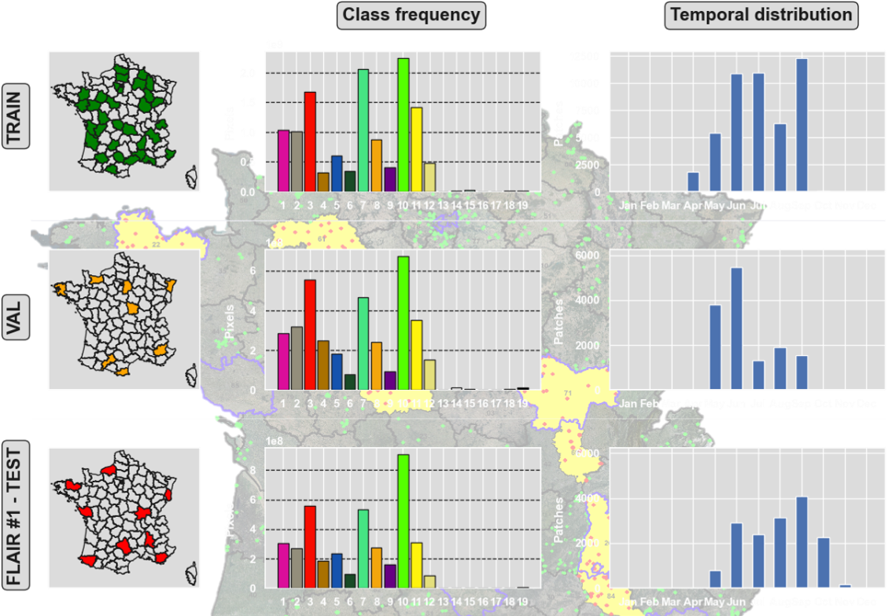
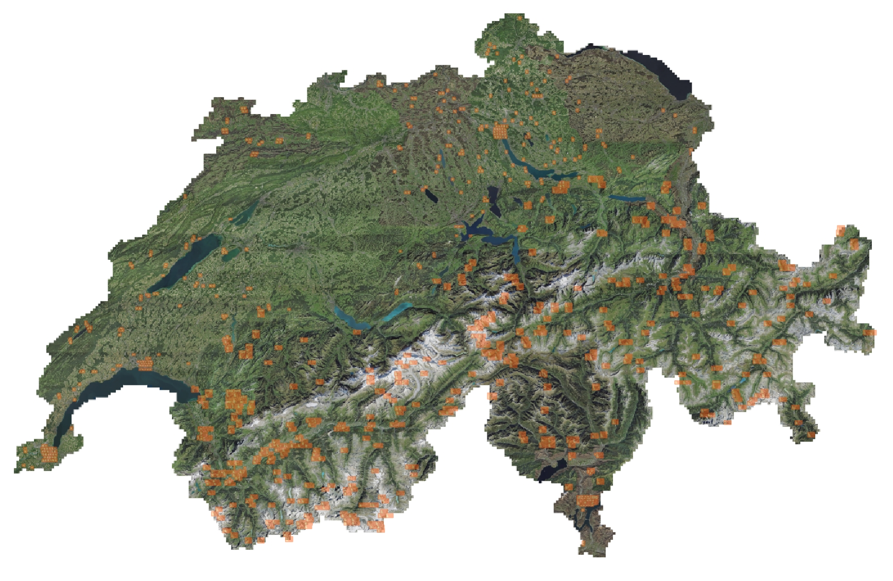
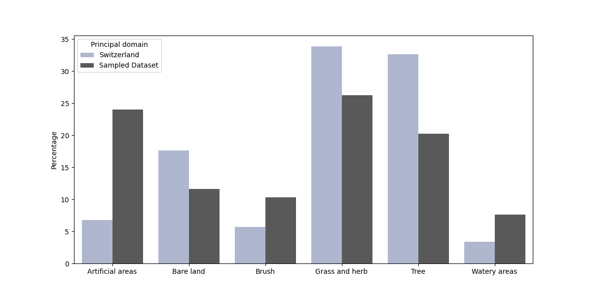
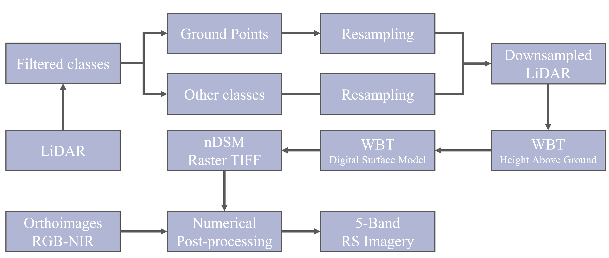
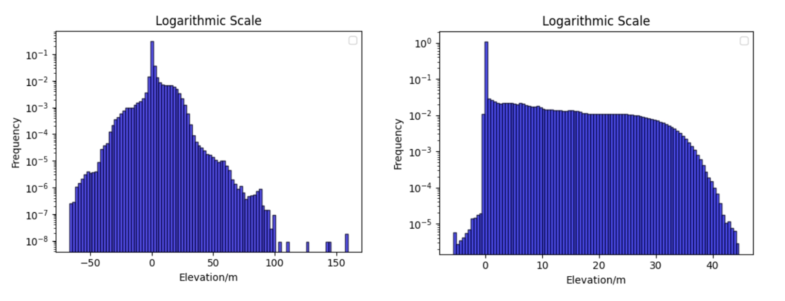
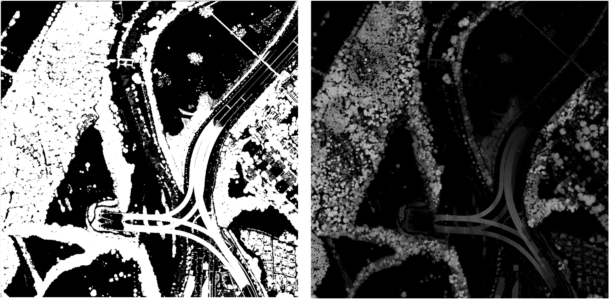
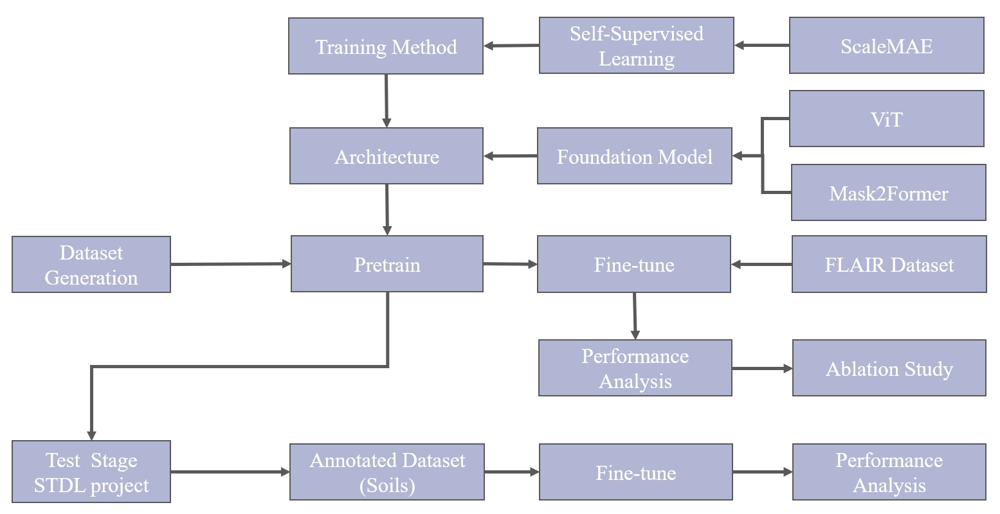
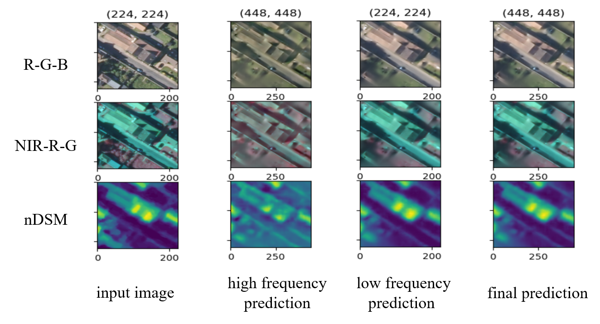

Vision Transformer for Multi-modal Remote Sensing Imagery ¶
Shanci Li, HEIG-VD - Adrien Gressin, HEIG-VD - Alessandro Cerioni, Etat de Geneve - Roxane Pott, swisstopo
October 2023 to June 2024 - Published in March 2025
This work by STDL is licensed under CC BY-SA 4.0


Abstract: The STDL and HEIG-VD jointly conducted an exploratory project to reveal the potential of large-scale multi-modal remote sensing imagery and Foundation Models with vision transformers (ViT) for earth observation tasks. In this project, besides multi-spectral aerial orthoimages, the normalized Digital Surface Model that is fine-grain calibrated is introduced as the second modality. Utilizing self-supervised learning techniques, we pre-train the encoder of the ViT with around 500 GB unlabelled data and further finetune the model on downstream applications with labelled ground truth. This article documents the construction of the dataset and analyzes the performance of the ViTs.
Introduction¶
Participating in the FLAIR challenge launched by IGN, HEIG-VD was motivated to investigate the capabilities of large-scale multi-modal remote sensing imagery alongside the advanced ViT architecture. In collaboration with STDL, this project is directed towards exploring the domain and implementing the state-of-the-art methodology within one of STDL's projects to assess its efficacy.
Remote sensing (RS) imagery stands as a pivotal data source for observing ground surfaces and land objects. A comprehensive grasp of RS images holds immense value across domains including urban planning, environmental assessment, and disaster monitoring. Leveraging the inherent ability to autonomously extract intricate features, the deep learning techniques notably excel in all kinds of earth observation tasks like quarry detection, land cover and use classification, and building block extraction. Typically, deep neural networks are pre-trained on ImageNet, one of the most diverse labelled natural image datasets, with almost 21,000 labelled classes. However, the disparities between natural and RS images pose challenges. RS images, captured from a bird's-eye perspective, lack the variety of natural images and exhibit lower spatial resolution. Therefore, models pretrained on natural images may not achieve optimal performance on RS downstream tasks.

Fig. 1 Framework of the RSFMs. The models are trained with large-scale multimodality data and can be adapted to downstream applications.
Addressing these challenges necessitates the development of Remote Sensing Foundation Models (RSFMs) adept at extracting representative image features. Introduced from natural language processing, the Vision Transformer (ViT) succeeds in both scalability and flexibility, outperforming most traditional Convolutional Neural Networks. Fig. 1 from this review paper illustrates the framework of RSFM. The paper made a detailed survey about the current research in this domain.
However, ViTs are extremely data hungry and the scarcity of large annotated RS datasets has long hindered progress in this domain. Recent efforts, such as the introduction of MillionAID dataset, have sparked interest in supervised RS pretraining, showcasing the feasibility of leveraging large-scale RS datasets. Yet, RS tasks are sensitive to the geo-context of the target application area and supervised pretraining with a limited dataset from global collections would potentially distract the model while it entails significant expertise and labour costs for labelling.
In fact, the development of aerial and satellite technology has facilitated access to vast amounts of unlabeled RS imagery collection. Effectively harnessing these unlabeled resources is crucial for developing resilient models. For deep learning, Self-Supervised Learning (SSL) is a promising method for learning from unlabeled data. Techniques like contrastive learning and generative-based methods have shown efficacy in learning effective feature representations. However, designing pretext tasks and gathering requisite data for SSL can be problematic, prompting the exploration of more streamlined approaches like Masked Image Modelling (MIM) and Masked AutoEncoder (MAE).
Besides, while existing research often focuses on a single data source, there's potential for integrating information from diverse modalities to enhance model capabilities. Taking data availability into consideration, we decided to introduce the following two additional bands:
- Near-InfraRed (NIR)
- Normalized Digital Surface Model (nDSM):
spectral information that sensitive to vegetation. provides a reference for the pixel height above ground, which brings extra information other than optical reflection.
Therefore, three objectives of this project were proposed:
- Introduce the multi-spectral and multi-modal resources in the RS imagery. Construct a large-scale unlabelled dataset with 5 bands: Red, Green, Blue, NIR and nDSM.
- Implement the SSL with large-scale unlabelled RS imagery in the Europe area and pre-train a ViT encoder to extract representative features and explore the potential of the architecture.
- Finetune the RSFM with a pre-trained encoder on semantic segmentation tasks and compare the downstream performance with the counterpart pre-trained on the natural imagery.
Dataset consolidation¶
1. Sources and Statistics¶
Open datasets and sources:
-
LiDAR point cloud:
-
Aerial images:
-
Satellite images:

Fig. 2 5-channel RS imagery dataset sample: left - True color (RGB); middle - False color (NIR-R-G); right - Elevation (nDSM)
We generated a large-scale 5-band unlabelled RS imagery dataset to facilitate the pretraining of the ViT encoder from the above data source, an accurately geo-referenced sample image shown in Fig. 2. Table 1 shows the composition and the statistic of this dataset, which are distributed across three nearby European countries: Switzerland, France and Italy. For each region, we collect the high-resolution 4-band aerial orthoimage from open data and calculate the nDSM channel from the LiDAR point cloud.
| Source Data | Country | Scene | Area (km2) | Resolution | No. of images | Size (GB) |
|---|---|---|---|---|---|---|
| SWISSIMAGE | Swiss | Mixed | 2,172 | 10/25 cm | 282,243 | 346 |
| City of Ferrara | Italy | Mixed | 95 | 10 cm | 39,907 | 49 |
| FLAIR | France | City | 810 | 20 cm | 77,762 | 96 |
| Sum | 3,077 | 399,912 | 491 |
Table 1 Composition and statistics of generated large-scale Remote Sensing imagery dataset.
The initial idea of the project was to generate a terabyte-scale dataset, but we found it not feasible for training with our current computation resources (5 * NVIDIA A40 GPU). As performance improvements in deep learning models require exponential growth in dataset size in most cases, we ended up compromising to a dataset size of around 500 GB. Concerning this constraint, we processed each region with a different strategy.
Concerning Italy, all the available orthoimages and LiDAR covering the City of Ferrara (#6) were included in the dataset . The terrain is limited to urban areas and suburbs, and a small amount of farmland can also be observed.

Fig. 3 Class frequency and temporal distribution for train, validation and test set of FLAIR #1
For France, the BD ORTHO® database (#5) is currently updated on a 3 or 4-year basis with a default resolution of 20 cm in RGB and NIR channels all over France. However, the publishing of LiDAR data (#2) has not been finished yet and can be tracked following this link. The tools to download and calculate the nDSM from this source are developed while matching the acquisition time of orthoimages and LiDAR is time-consuming, here we use the FLAIR (#4) dataset constructed with the same source data to introduce France terrain features. The class frequency and temporal distribution are shown in Fig. 3.

Fig. 4 Sampled area in Switzerland
For Switzerland, over 2/3 of the area has published swissSURFACE3D LiDAR data (#1) and SWISSIMAGE RS (#3, 10-50 cm resolution) is available across Switzerland if requested from swisstopo. This part takes up the majority of the dataset and we carefully balanced the terrain distribution given the land cover statistics from Arealstatistic project, which classified Swiss terrain into 6 p domains. Fig. 4 shows the location of the sampled areas. We manually selected city centre in Geneva, Lausanne, Zurich and Lugano while trying to balance the principal domain of the remaining dataset by curated sampling strategy. As shown in Fig. 5, the proportion of artificial areas, brush and watery areas have been increased compared with the natural terrain distribution across Switzerland.

Fig. 5 Land cover distribution for the entire Switzerland and for the areas sampled by our consolidated dataset
Regardless of computational constraints, the scripts to generate high-resolution 5-band RS images can scale up the dataset easily given the current open data. We also explored the potential of satellite imagery which contains rich spectral information with much lower spatial resolution (10 meters). However, it is difficult to get a cloudless image within the time window of LiDAR acquisition. Considering the data quality and labour cost for sanity checks, we did not include this data source in our dataset.
2. Data Generation Workflow¶

Fig. 6 Workflow to generate 5-band images with classified LiDAR and orthoimages
We first tried to search for existing DSM and DTM (Digital Terrain Model) open data and differentiate the normalized DSM, namely the height of the ground objects (buildings, vegetation, etc.). However, coupling the acquisition time of DSM (elevation of the tops of all off-terrain objects) and DTM (elevation of the bare-Earth surface) is problematic from the current resource. Thus, we searched for classified point cloud open data and then derived nDSM with PDAL library and WhiteboxTools (WBT) following the workflow shown in Fig. 6.
Classified point cloud is first filtered to class between 2 and 17, which follows the LAS Classification codes. This step is necessary as there might be user-defined classes and unclassified points outside this range, which mostly is noise reflection from cloud and would destroy the terrain model. The LiDAR products come from aerial LiDAR acquisition with a density of at least 5 points per m², a mean of around 15-20 pts/m². As the resolution of orthoimages is usually higher (10 cm), the normalized DSM is resampled when calculated. To maintain the height information of objects above ground, we resampled the ground points (class 2) and others respectively. Then, with HeightAboveGround and LidarDigitalSurfaceModel tools from WBT, z-values in resampled point cloud is converted from elevations to heights above the nearest ground-classified point and transformed to raster GeoTIFF afterwards.

Fig. 7 nDSM distribution over the test area:
left - difference of DSM and DTM; right - derived from classified LiDAR point cloud
In the logarithmic scale, Fig. 7 shows the nDSM from inconsistent DSM and DTM and the nDSM from the LiDAR point cloud. The former centres near zero and has massive negative values, which is apparently not the fact, while the latter is much more reasonable as most heights range from 0 to 45 meters. Therefore, numerical post-processing is learned from the FLAIR dataset, the 32-bit float value of nDSM is multiplied by a factor of 5 and encoded as an 8-bit unsigned integer datatype (uint8) to optimize the storage and keep consistent with other channels. The scaling clips the nDSM value between 0 and 255 with 0.2 meters resolution. Except only positive values are allowed, heights above 51 meters are also cut off. Fig. 8 visualizes the process, as the majority of height information is preserved after processing.

Fig. 8 nDSM numerical post-processing: left - Before; right - After
Finally, integrated with RGB-NIR orthoimages, the 5-band remote sensing imagery is constructed.
Experiments¶
As discussed in Section 1, Foundation Models with specific architecture for RS imagery is of significance and Self-Supervised Learning is the key to utilising large-scale unlabelled datasets for pre-training. Through a literature review of state-of-the-art models for both natural and RS imagery, we explored various architecture and SSL training methods while investigating their computation costs. Equivalent training time in GPU hours is estimated between different models by this benchmark. Some representative models and features are listed in Table 2 below:
| Model | Backbone | Pretraining Dataset | Model Size | GPU | GPU hours | Est. Training Time (5 * NVIDIA A40) |
Features | |
| Natural FMs |
Swin | Swin-T/S/B/L | ImageNet (150G) | 29M/50M/88M/197M | V100 | 850 | 5 days | Hierarchical Transformer Architecture; Window-based Self-Attention Mechanism; Shifted Window Attention |
| I-JEPA | ViT-B/L/H | ImageNet (150G) | 633M (ViT-H-14) |
16 * A100 80G | 1152 | 35 days | Joint-Embedding Predictive Architectures; Training Efficient - 5.3x to MAE |
|
| MAE | ViT-B/L/H | ImageNet (150G) | 307M (ViT-L) |
64 * V100 | 2688 | 15 days | Masked Autoencoders; Masked image encoding |
|
| SAM | ViT-H | SA-1B (11M images / 1B masks) |
636M (ViT-H/16) |
256 * A100 | 17408 | 520 days | Image encoder; Prompt encoder; Mask decoder |
|
| RSFMs | RVSA | ViT-B | MillionAID | 86M (ViT-B) |
8 * A100 80G | - | - | Plain ViTs; Rotated varied-size window attention; |
| SatMAE | ViT-L | fMoW-RGB (200G) |
307M (ViT-L) |
8 * V100 16G | 960 | 5 days | Temporal Encoding; Multi-spectral RS image input |
|
| ScaleMAE | ViT-L | fMoW-RGB (200G) |
307M (ViT-L) |
- | - | - | GSD Positional Encoding; Super-resolution; Multiscale Features |
|
| Cross-Scale MAE | ViT-B/L | fMoW-RGB (200G) |
307M (ViT-L) |
A6000 | - | - | Multi-Scale Augmentation; Cross-Scale Information Consistency; Contrastive learning; GSD Positional Encoding |
|
| Multi-MAE | ViT-B | ImageNet (150G) | 86M (ViT-B) |
8 * A100 80G | 320 | 10 days | Multi-task; Cross-modality: depth and semantic; Pseudo labeling |
The limited resources constrain our choice of a feasible solution. Detailed model performance on various downstream tasks can be found in this review paper. Among the list, ScaleMAE stands out with GSD Positional Encoding and Multiscale Features. While the author did not clarify the training cost, they followed the implementation of SatMAE and we can use it as a reference.
The workflow in Fig. 9 outlines the progression of experiments and methodologies selected. Generally, current FMs adopt the autoencoder structure, namely an encoder to learn the image representation followed by a decoder to reconstruct the input. The generated dataset first undergoes a Pretrain stage, where the FM (ViT) pre-train its encoder with ScaleMAE. For the pre-training stage, a previous study (MAE, SimMIM) shows that decoder architecture is not the bottleneck to learn the image representation for masked image modelling techniques. However, it is not the case when it comes to Fine-tune on the downstream tasks. Certain modules specifically designed for different tasks, e.g. Semantic Segmentation, Scene Classification, and Object Detection, remain crucial even pre-trained encoder can effectively improve model performance.

Fig.9 Experiments design and workflow
In this project, we decided to use UperNet as the decoder following the implementation from MMsegmentation considering its strength in scene understanding and semantic segmentation. The model is further refined on two annotated datasets, FLAIR #1 and STDL-SOILS to optimal performance with supervised learning.
After fine-tuning, the model performance is analyzed and compared in segmentation accuracy. Additionally, the Ablation Study is conducted on the FLAIR dataset, which involves systematically removing components from the model to assess their individual contributions.
The code is available at this GitHub Repository.
Pre-training¶
The original implementation of ScaleMAE is designed for 3-band RGB images, therefore, we modified the network to be compatible with 5-band inputs. To accelerate the pre-training, we initialized the optical channels (RGB) with weights from ScaleMAE which is pre-trained on FMoW-rgb dataset. The encoder is trained with the RS imagery dataset for more than 600 epochs. According to the reconstructed image visualization and the convergence of the training loss curve, 3-band pre-trained weights are still valuable for initializing 5-band model. While the additional channels can copy the weights from the optical channel, it raises the concern that this strategy would trap the model to local optimal concentrated on optical features.
Fig. 10 visualizes the reconstruction results with ScaleMAE. The input image is firstly resampled to different resolution and masked before entering the encoder. The decoder tries to rebuild the masked image patches from the know pixels and aggregate the final prediction. The results shown in Fig. 10 demonstrates the effectiveness of ScaleMAE and self-supervised learning (SSL) for NIR and nDSM bands as well.

Fig. 10 Reconstruction visualization for low and high frequency features and final prediction
Fine-tuning¶
After learning image representation from large-scale RS imagery, the encoder is further finetuned on two labelled dataset for semantic segmentation task. Here are previous studies on the two datasets:
Here, we use the ViT-Adapter solution trained by HEIG-VD as the comparison. Generally, ViT-Adapter employs a plain ViT (BEiT) that can learn powerful representations from large-scale multi-modal data as the backbone. When transferring to downstream tasks, a pre-training-free adapter is used to introduce the image-related inductive biases into the model, making it suitable for these tasks. In HEIG-VD implementation, Masked Attention Transformer proposed by Mask2Former is adopted as the decoder for ViT-Adapter. Besides, the BEiT weights loaded is firstly pre-trained with self-supervised learning (MIM) and further optimized with supervised scene classification task on ImageNet dataset. HEIG-VD deployed both 3-band and 5-band model
| Model | STDL Model | ViT-Adapter (HEIG-VD) |
|---|---|---|
| Number of Bands | 5 | 3 |
| Decoder | UperNet | Mask2Former |
| Pre-training Method | ScaleMAE | BEiT + Supervised Learning |
| Pre-training Dataset | RS imagery | ImageNet-22k |
| Backbone | ViT-L | BEiT-L |
| Input Size | 512 * 512 | 512 * 512 |
| mIoU - FLAIR | 62.15 | 62.80 |
| mIoU - SOILS | 77.39 | 76.85 (3-band) |
Table 3 Implementation and performance of our model (Vision Transformer) and previous study (ViT-Adapter)
note: ImageNet-22K means 2 stage pretraining with ImageNet-21K (Self-Supervised Learning) and ImageNet-1K (Scene Classification Supervised Learning).
Table 3 shows the model configuration and their performance with mean Intersection-over-Union (mIoU). For FLAIR challenge, the Vision Transformer pre-trained on large-scale 5-band RS imagery did not outperform the ViT-Adapter which stems from natural imagery. However, this can not lead to the conclusion that RS imagery did not bring gain to the model. On the one hand, the two models are designed with different architecture. ViT-Adapter introduces spatial and multi-scale architecture for encoder-adapter and advanced transformer module for decoder, which could be more powerful than ViT and UperNet. On the other hand, additional supervised learning on ImageNet-22k dataset could benefit the pre-training more compared with solely self-supervised learning. The ground truth label from scene classification could empower the ViT-Adapter with better image representation.
When it comes to the STDL-SOILS project, the Vision Transformer surpassed the ViT-Adapter that only utilizes 3-band RGB image. The pre-training of BEiT model used a image-to-text tokenizer (DALL-E by OpenAI) which compatible with 3-band imagery only. We did not generate a 5-band pre-trained ViT-Adapter with RS imagery as delving into expensive tokenizer was beyond the scope of the project. Therefore, to better understand the effect of adding band information and RS imaginary pre-training, we deploy the ablation study on Vision Transformer model.
Ablation Study¶
Window Size and Photometric Augmentation¶
| Model | Baseline | Tiny Window | PhotoMetric |
|---|---|---|---|
| Number of Bands | 5 | 5 | 5 |
| Pretrain Method | ScaleMAE | ScaleMAE | ScaleMAE |
| Pretrained Dataset | RS imagery | RS imagery | RS imagery |
| Backbone | ViT-L | ViT-L | ViT-L |
| Input Size | 512 | 224 | 512 |
| mIoU | 62.15 | 58.46 | 60.74 |
Table 4 Comparison of models with Tiny Window inputs and PhotoMetric augmentation.
Shown in Table 4, finetuning on different model configuration is firstly conducted. As the encoder is pretrained with (224，224) image resolution, we tested the model with the same window size as pretraining and window size (512, 512) which has larger receptive field. The outcome shows that smaller window limits the information passed to the model, which resulted in lower performance. While it is more costly for computation, enlarging the input window size can improve the model capacity significantly (around 4% in this case). Concerning the difficulties for deployment on small GPU memory machines (16 GB and lower), we did not further increase the window size.
Photometric augmentation, like random brightness, contrast, hue, saturation, and noise, is a popular data enhancement method for deep learning. However, these methods are initially designed for RGB color space. It is not feasible to extend some of the augmentation to multi-spectral and multi-modal data as the transformations are only applicable to RGB images. Given the NIR and nDSM channels consolidated, we complied partial photometric distortion (random brightness, contrast and Gaussian noise) for 5-band images to the finetuning stage. Experiment shows that these augmentation tricks do not benefit the semantic segmentation performance. Constrained by the lack of variety, the remote sensing imagery has more fixed patterns. Therefore, the photometric augmentation might mislead and confuse the model with nonexistent features.
Pretrained Dataset and 5-band Inputs¶
| Model | Scratch Initialization | Scratch Initialization | RS Initialization | Natural Initialization | RS Initialization | Natural Initialization |
|---|---|---|---|---|---|---|
| Number of Bands | 3 | 5 | 3 | 3 | 5 | 5 |
| Pretrain Method | None | None | ScaleMAE | Supervised Learning | ScaleMAE | Supervised Learning |
| Pretrained Dataset | None | None | RS imagery | ImageNet-22K | RS imagery | ImageNet-22K |
| Backbone | ViT-L | ViT-L | ViT-L | ViT-L | ViT-L | ViT-L |
| Input Size | 512 | 512 | 512 | 512 | 512 | 512 |
| mIoU | 53.73 | 53.86 | 60.54 | 60.52 | 62.15 | 61.58 |
Table 5 Ablation study of 5-band imagery and pretraining with large-scale RS / natural dataset.
Table 5 reveals the contribution of pretraining with large-scale unlabelled dataset and 5-band imagery. On the one hand, when it comes to the baseline model initiated from scratch, additional channels with NIR or elevation information didn't bring gain. The mIoU for the two models are almost the same. As in FLAIR challenge, some model got best performance with 3-band inputs instead of using all the 5 bands. This shows that either additional bands did not bring more information for semantic segmentation or current network architecture faces the challenge to utilize the information from multi-modal inputs.
On the other hand, pretraining from large-scale dataset does benefit for the downstream tasks. Around 7% mIoU improvement on 3-band models can be obtained from the self-supervised learning with either remote sensing or natural imagery. With additional bands, segmentation performance can be further improved by around 1-2%, which demonstrates that multi-spectral and multi-modal architecture is more data-demanding than the one with RGB images.
Conclusion and Outlooks¶
Foundation models with vision transformer is the recent spotlight of remote sensing field. In this project, we consolidated a large-scale 5-band multi-modal RS dataset and tested different architecture designed for RS or natural images on downstream semantic segmentation task. Our observations from experiments indicate that although Remote Sensing Foundation Models exhibit promise, they encounter obstacles in achieving significant advantages over natural Foundation Models owing to the constraints posed by limited remote sensing data and certain structural design limitations. While our 500 GB dataset did not break through, the latest research (SkySense – 300TB multi-modal and multi-spectral image series) in this direction proved that an enriched pre-train dataset can improve performance remarkably but is extremely expensive and not cost-effective for application projects.
Besides, pre-training method and data have significant impact on the downstream task. Recent efforts have explored segmentation pre-training paradigms to improve model representation capability, particularly for tasks demanding finer granularity. This suggests that specific pre-training, especially with consistent target representation, could bolster model performance during finetuning, bridging the gap between pre-training and downstream tasks. E.g.:
- Image reconstruction – semantic segmentation (pixel-level)
- Vision-language models – scene classification (scene-level)
- Object detection - instance segmentation (instance-level)
This conclusion is also validated by the superior performance of RS pretrained model in STDL-SOILS project, as the majority of the pretrained dataset comes from Switzerland. Given data from nearby location, pretraining is more beneficial to the downstream task. Therefore, ground truth from different STDL projects can accumulatedly contribute to a single RSFM for all kinds of Swiss Earth Observation (EO) tasks.
Finally, compared with HEIG-VD's ViT-Adapter solution, we found designing an RSFM requires not only a well-suited pre-training algorithm but also an excellent multiscale structure that enables the model to better understand the image representation.